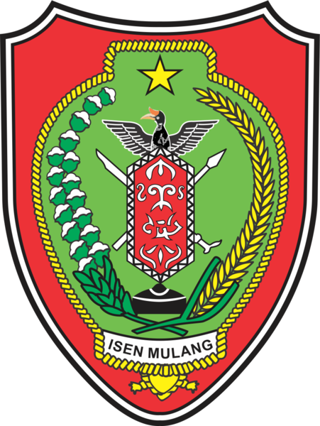

|  |
PEMERINTAH DAERAH PROVINSI KALIMANTAN TENGAHDINAS PENDIDIKANSEKOLAH MENENGAH KEJURUAN NEGERI 1 MUARA TEWEHAlamat : JL. Brigjen Katamso No.10 Km.1 Muara Teweh Telp.(0519)21834 |
Berdasarkan Surat Kepala Sekolah SMKN 1 Muara Teweh Tanggal 30 Agustus 2023 perihal Permohonan Narasumber untuk pendampingan implementasi kurikulum merdeka 2023 jenjang SMK, Kepala Dinas Pendidikan Provinsi Kalimantan Tengah menugaskan Kepada:
Nama : Hendi Suparman, S.Pd
Untuk Mengikuti pelatihan kurikulum merdeka bagi guru sasaran jenjang SMK yang akan dilaksankan pada:
| Hari/Tanggal | : | Rabu, 7 September 2023 |
| Waktu | : | Jam 08:00 WIB |
| Tempat | : | Lab Komputer |
| Acara | : | Pertemuan awal penyelanggaraan pendampingan kurikulum merdeka jenjang SMK |
Demikian surat tugas ini dibuat untuk dilaksankan dengan penuh tanggung jawab dan dipergunakan sebagaimana mestinya.
| Muara Teweh, 31 Agustus 2023 |
| Kepala SMKN1 Muara Teweh |
| Asliadi, S.Pd |